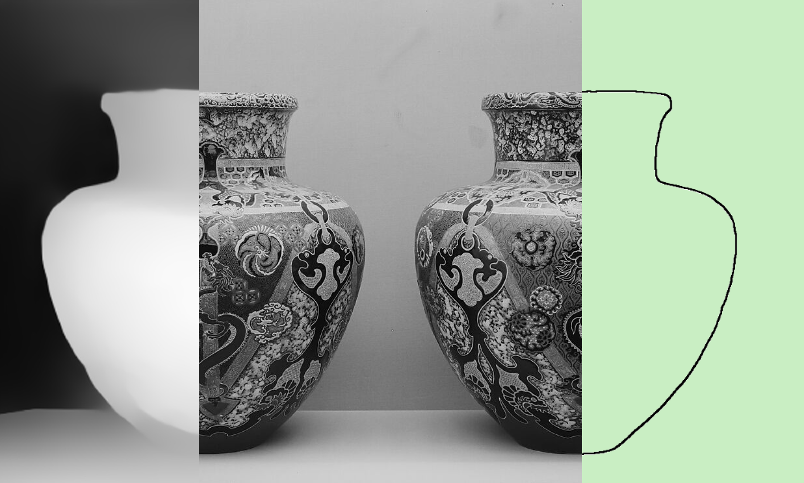
01 — Concept
Latent Kiln asks: how does a machine perceive cultural form? Starting from 270 ceramic vases drawn from the Victoria & Albert Museum archive and spanning six geographic regions — East Asia, Africa, the Americas, Asia, Europe, and the Middle East — the project trains five parallel computer vision models, each encoding a distinct perceptual dimension of ceramic morphology.
Rather than treating classification as a sorting task, the project frames it as an act of curation. The resulting "machinic curator" places every artifact within a six-dimensional morphological universe, translating visual features into spatial coordinates that map cultural distance across time and geography.
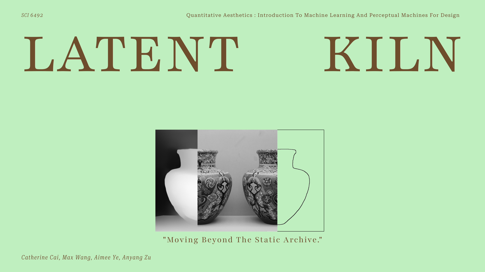
Title composition — original photograph, grayscale rendering, and edge silhouette of a single vessel
02 — Dataset & Collection
The archive focuses exclusively on vases as a typology — a form present across all six regions but differentiated by material culture, production method, and ornamental tradition. Each vessel is digitised as a high-resolution photograph against a neutral background, sourced from the V&A's open-access API.
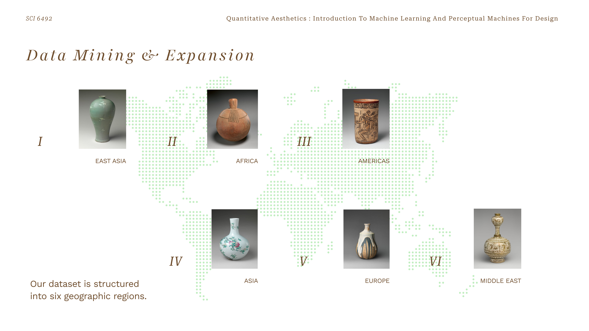
Six geographic regions — East Asia, Africa, Americas, Asia, Europe, Middle East — each represented by characteristic vessel forms
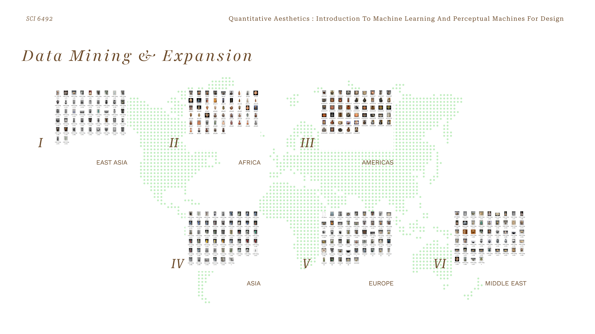
Full dataset — 270 vessel thumbnails distributed across a world map by region of origin
03 — The 5 Models
Five parallel classifiers are trained on five distinct visual representations of the same vessel: the original photograph (color + texture), a grayscale rendering (light + shade), a thick-edge silhouette (2D linearity), a depth map (3D volume), and a binary mask (2D mass). Each model learns a different aspect of what makes a ceramic "look" like it belongs to a particular region.
Photo-based models achieve the highest test accuracy (73.3%), but the interface intentionally begins with user-drawn sketches — where ambiguity and abstraction are part of the experience. Edge and depth models, though lower in raw accuracy, are better at capturing form rather than surface.
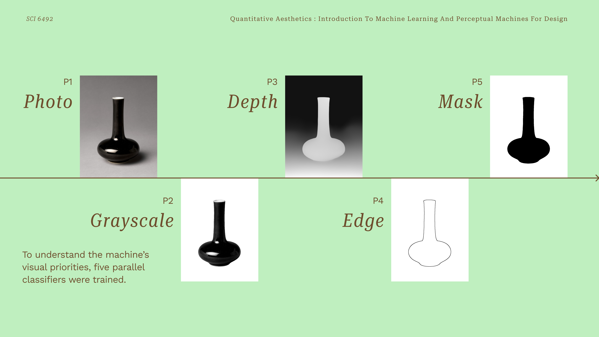
One vessel — five perceptual encodings: Photo · Grayscale · Edge · Depth · Mask
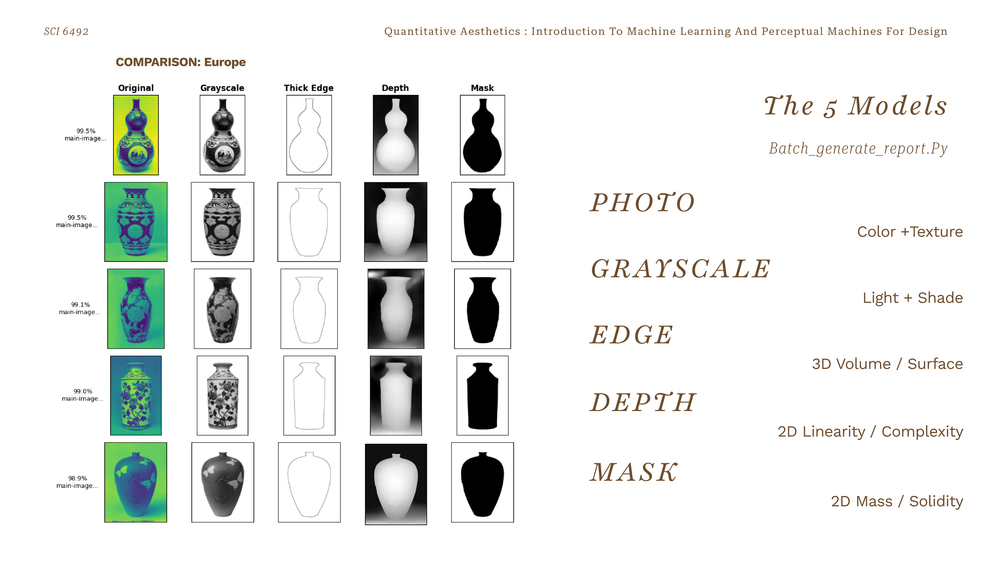
European vessels across all five representations — the machinic curator sees each vessel through five distinct lenses simultaneously
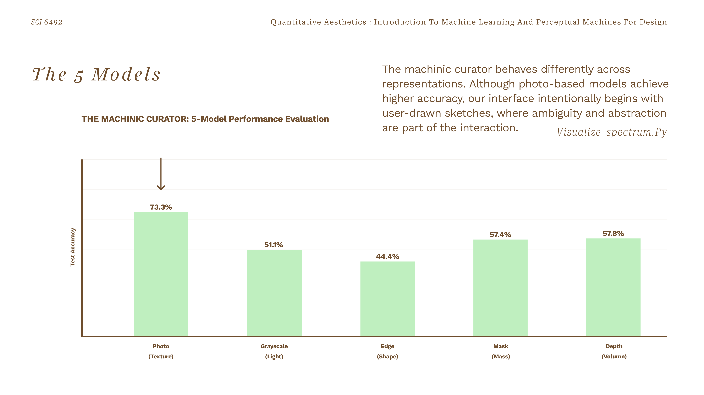
5-Model performance evaluation — Photo 73.3% · Grayscale 51.1% · Edge 44.4% · Mask 57.4% · Depth 57.8%
04 — Morphological Universe
Each vessel's classification probabilities across six regions act as directional forces on a radial map. The six axes represent the six cultural regions; the model's confidence in each region pulls the artifact toward that pole. The resultant vector — the sum of all six weighted forces — determines a precise X,Y coordinate in a two-dimensional morphological universe.
This spatial translation logic converts subjective cultural affinity into measurable geometry. A vessel deeply ambiguous between Africa and the Americas sits between those two poles; a canonical East Asian piece clusters tightly at the East Asian axis.
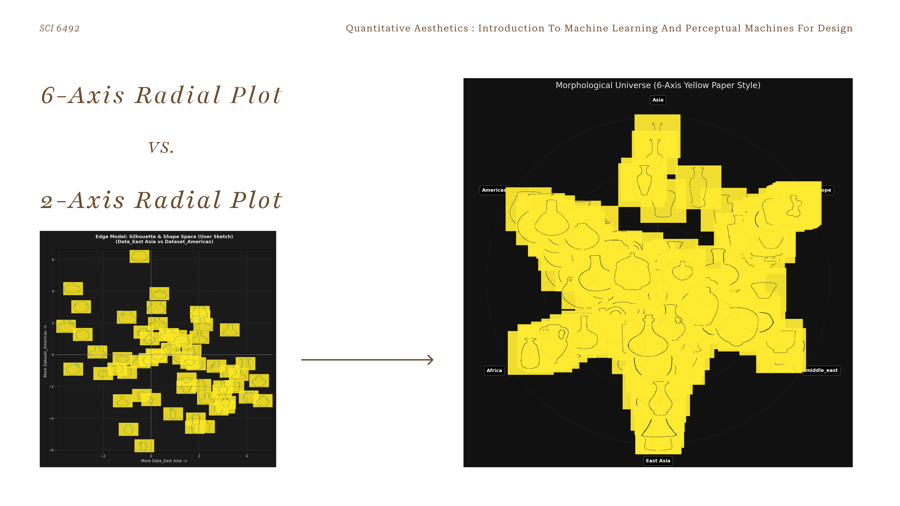
Morphological Universe — 270 vessels positioned by their 6-axis resultant vector, rendered on a yellow-on-black field
05 — Assets Generation
Beyond classification, the project physically deconstructs each vessel into three anatomical components — neck, body, and base — using a combination of AI-prompt segmentation and manual curation. Sixty vessels were fully processed, creating a combinatorial space of over 200,000 possible recombinations: a mathematical design space rather than a fixed archive.
A second Python script aligns components by interface width and relative proportion, producing volumetrically coherent hybrid vessels that merge aesthetic traditions across cultures and centuries.
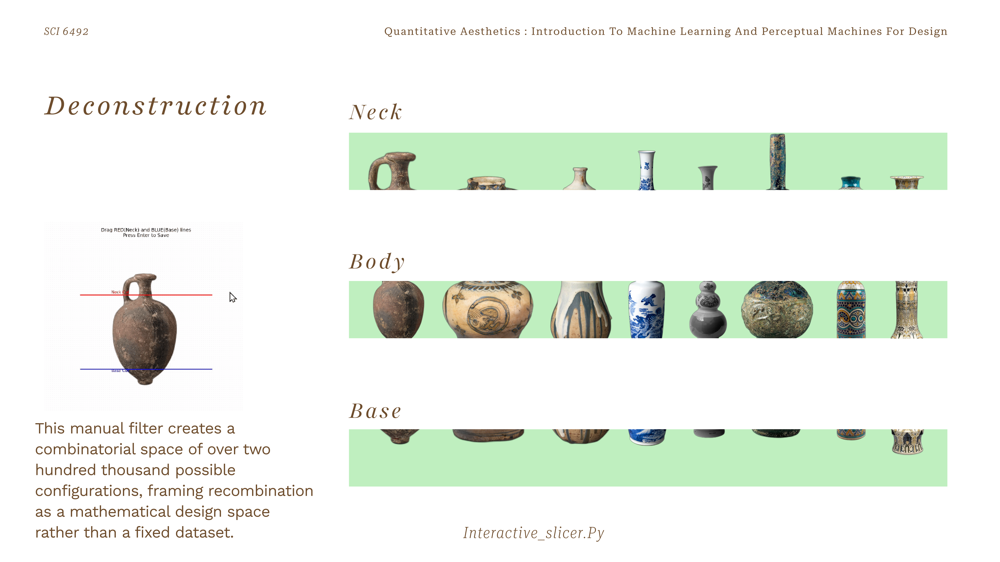
Anatomical deconstruction — vessels sliced into Neck · Body · Base components for recombination
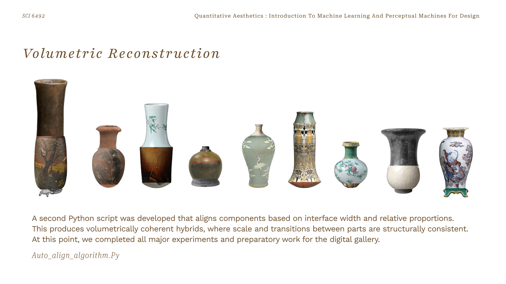
Volumetrically coherent hybrids — cross-cultural recombinations aligned by interface width and relative proportion
06 — Interactive Exhibition
The trained models power a dual-interface browser exhibition. On the left, visitors draw any vase silhouette freehand. On the right, the system operates in two modes: Universe mode, which surfaces the nearest morphological relatives and predicts the top three matching regions; and Remix mode, which enters an Assembly Station where the visitor's drawn vase is deconstructed and recombined with parts from across the archive — generating novel hybrid vessels in real time.
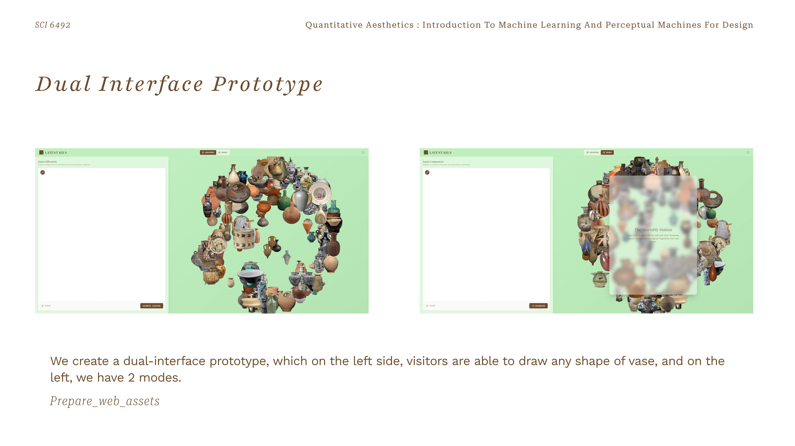
Dual Interface Prototype — Universe mode (left) and Remix / Assembly Station mode (right)
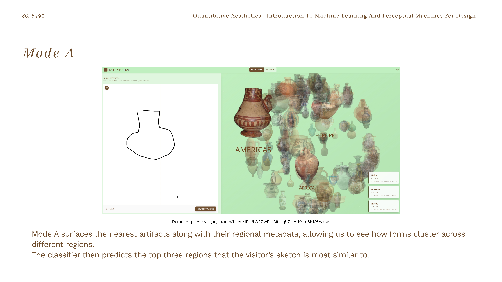
Mode A — visitor sketch triggers a search across the morphological universe; nearest artifacts surface with regional metadata
Tags